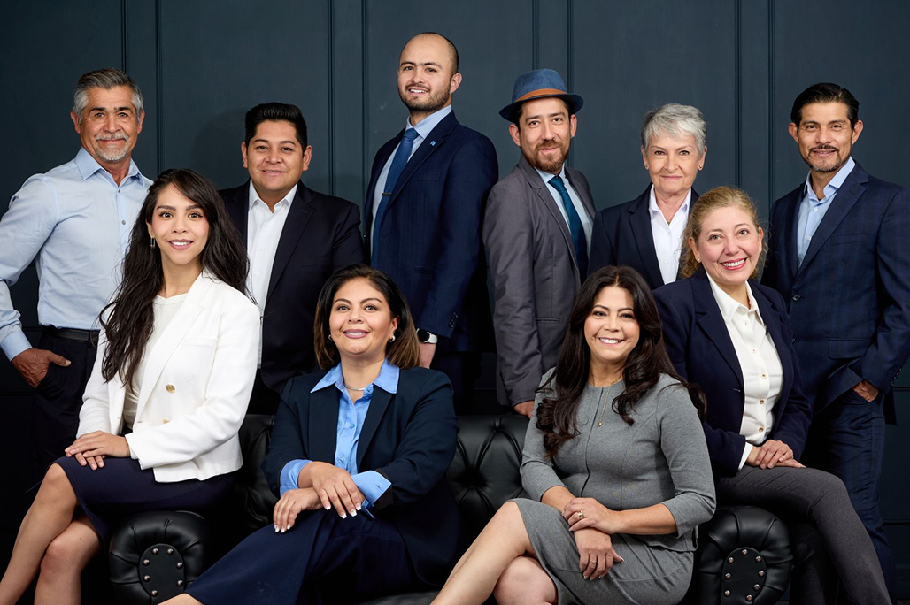

¿Quiénes
Sómos?
0
beneficiarios
Somos una institución de asistencia privada dedicad a la atención,
canalización y prevención de niños con quemaduras principalmente en el
Estado de México.
Además, somos donataria nacional e internacional autorizado, certificado
por JAPEM, (Junta de asistencia Privada del Estado de México), con
registrado en STPYS como capacitador externo. Fuimos honrados con el
Premio Estatal Altruismo en 2022, y nuestro estatus consultivo ante las
Naciones Unidas nos ubica entre las 64 organizaciones mexicanas que
gozan de esta distinción. Misión Atender a niños, niñas y adolescentes,
principalmente con quemaduras o secuelas, canalizarlos a instancias
especializadas en México o el extranjero, que cuenten con el tratamiento
adecuado y oportuno, promover la cultura de la prevención y capacitar al
mayor número de personal médico de emergencias para la correcta atención
del paciente quemado. Visión Llegar a ser una institución fuerte,
consolidada y de referente en la atención y canalización de niños con
quemaduras, así como fuente de consulta en la prevención de quemaduras.

Patronato:
LDG. M. Patricia Carreño Salinas
Presidenta Fundadora
Lic. Sebastían Yakín Millán Carreño
Secretario General y Representante ante la ONU
Alma R. Pantel
Tesorera
Miltón Muñoz Carcini
Patronato
Margarita Yeo Ruíz
Patronato
Colaboradores:
Dr. Omar Avilés Gutiérrez
Coordinador Médico
Lic. Miriam Alejandra Rocha Calalpa
Coordinadora Legal
Lic. Luis Arturo Cedillo Colín
Coordinador de Imagen
Mtra. Claudia Castillo Parra
Patronato
Jesica Abigail Mondragón Peralta
Relaciones Públicas
Gerardo Carreño Salinas
Programas
Únete a
la historia
Se el ángel en la vida de algún paciente, ayúdalo a su pronta
recuperación.

O también puedes apoyarnos atreves de la cuenta de banco:
CITIBANAMEX 7012 8834646
y seguir apoyando a nuestros beneficiarios.